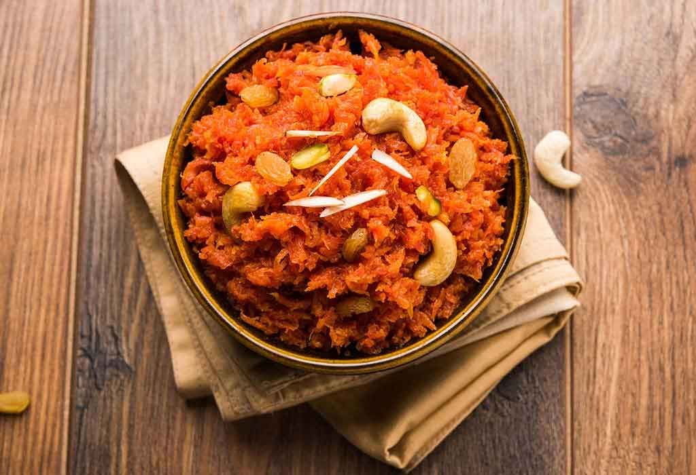

Gajar Halwa

Description
Gajar halwa is a carrot-based dessert from India. It is made by cooking grated carrots in a pot containing a specific amount of water, milk and sugar. It is often served with a garnish of almonds and pistachios.
- Prep time : 11-15 minutes
- Cook time : 31-40 minutes
- Serve : 4
- Level of Cooking : Moderate
- Taste : Sweet
Ingredients
- Carrots, medium sized, 8-10
- Ghee, 3 tablespoons
- Green cardamom powder, 1/4 teaspoon
- Sugar, 3/4 cup
- Almonds, sliced, 5-6
- Cashew nuts, 5-6
- Raisins, 10-15
- Grated khoya/mawa, 1 cup
- Chopped pistachios, 5-6 cup
Method
- Place the grated carrots in a microwave proof bowl. Add ghee and mix. Add green cardamom powder and mix. Cook in the microwave on HIGH for five minutes.
- Add sugar and mix. Cook in the microwave on HIGH for two minutes.
- Add almonds, cashew nuts, raisins and khoya (keeping aside some khoya for garnish) and mix. Cook in the microwave for two to two and a half minutes.
- Garnish with the remaining khoya and pistachios. Serve hot or cold.
Back to Odin Recipes